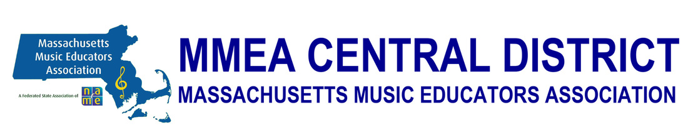
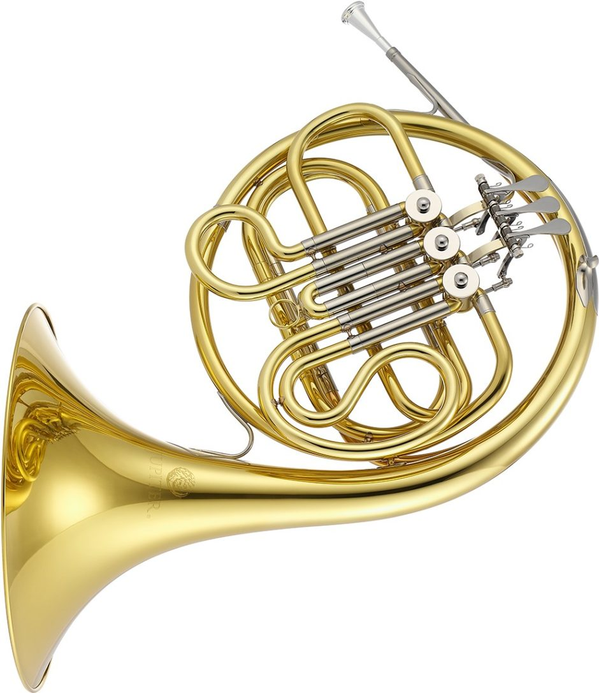
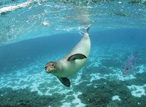

My Bio
Hi, I’m Eric. I was born in 2002 at Montreal, Quebec in Canada. I spent most of my childhood moving back and forth between Canada and China, and I moved to the U.S. in 2010 to attend third grade. I grew up with the Westborough public school system, from Hastings Elementary to Mill Pond to Gibbons Middle School and finally, Westborough High School. I spent my freshmen and sophomore years at Westborough High School, and I came to Mass Academy as a 15-year-old junior.

Hobbies
Music
Music has been my hobby for a long time. Ever since I was first exposed to music in 2006, it’s become an essential part of my life. I’ve been playing piano ever since I was four years old and I’ve been playing French Horn ever since fifth grade. I’ve participated in many music ensembles since then, ranging from regular school ensembles to larger ensembles like the Boston Youth Symphony Orchestras. I have also auditioned and made Districts every year (both junior and senior), and made All-states in my sophomore year (missed cutoff by 0.5 point in freshman year).


Marine Biology
Believe it or not, I was first exposed to marine biology when I was playing a diving video game in 4th grade. After that day, I constantly search up marine animals in my free time. In 6th grade, I dove into a huge textbook-style book that discussed marine mammals in detail. It was way too difficult for me to read, but I was motivated and eventually finished it. Anyways, marine biology has been one of my preferred future professions for many years.
